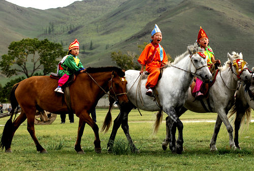

Horse

The Mongol name is ‘mori' or ‘aduu' the most beloved animal of the Mongols. Those famous Mongolian small horses carried the Mongols as they conquered half of the world. It was the major form transportation of the Mongols. It is very rare for a Mongols to kill a horse. They do not eat horse meat or use horse skin.But the mane and the tail hair is good for making rope and bags etc. It has a powerful neck, somewhat thick legs, and a dense coat, but it is wonderful for its fiery spirit and its vigor, endurance, steadiness, and sureness of foot. The horse is a symbol of the Mongol nation.